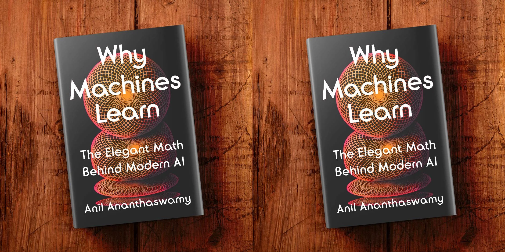

Prompt
Provide me with a thorough variety of reviews on the book, “Why Machines Learn: The Elegant Math Behind Modern AI” from different sources

Chat GPT-5 Answer
Here’s a cross-section of what different outlets and readers say about Why Machines Learn: The Elegant Math Behind Modern AI (Anil Ananthaswamy, Dutton, July 16, 2024; 480 pp. — paperback Aug 26, 2025):
Trade & professional reviews
- Kirkus Reviews: calls it “a challenging and illuminating overview” that guides readers through the math and concepts behind ML; rewarding but demanding. (Kirkus Reviews)
- Publishers Weekly: much tougher verdict, describing it as an “impenetrable primer” that struggles to elucidate AI for general readers. (PublishersWeekly.com)
Science & tech media
- Physics World: praises the book’s entertaining tour of how data are represented and analyzed, framing ML’s power with accessible science writing. (Physics World)
Bookstores & publisher pages (editorial blurbs)
- Harvard Book Store highlights it as a “masterful” and accessible explanation of the math under modern AI. (Harvard)
- Publisher page (PRH/Dutton) positions it as a narrative explanation of the core mathematics linking artificial and natural intelligence. (PenguinRandomhouse.com)
- Paperback listings (e.g., MIT Press Bookstore) feature endorsements like “an inspiring introduction to the mathematics of AI” and a playful warning: “Will there be math? Oh, yes, there will be math.” (mitpressbookstore)
Reader & community reactions
- Goodreads: strong reader reception (≈4.4/5 average; ~830 ratings, 117 reviews at the time captured), with many noting clarity plus rigor. (Goodreads)
- Amazon listing: editorial praise emphasizes the book’s sweeping, historical-plus-technical approach (customer ratings vary by edition). (Amazon)
- Reddit (r/learnmachinelearning): multiple commenters applaud how intuitively it lays out the math behind early ML (perceptrons, Bayes, etc.), particularly useful for coders who didn’t major in math. (Reddit)
Practitioner/blog reviews (mixed but mostly positive)
- Mindful Modeler (Substack): calls it “unusual,” appreciating the narrative approach to math and history. (mindfulmodeler.substack.com)
- John R. Purvis (Medium): favorable overview; notes breadth from Bayesian reasoning and SVMs to backprop and neural nets. (Medium)
- Marketing Data Science blog: “must-read” for understanding AI, while admitting some passages may require re-reads. (Medium)
- National CIO Review (Bookshelf): recommends it for leaders seeking math-grounded AI literacy; applauds the historical thread through the equations. (The National CIO Review)
- Adnan Masood, PhD (Medium): lauds the rigor and clarity for executives, but flags that the math can overwhelm casual readers. (Medium)
Publication details (for context)
- First publication: July 16, 2024 (Dutton), 480 pages. (Porchlight Book Company)
- Paperback release noted for Aug 26, 2025, sometimes listed with new afterword. (mitpressbookstore)
The bottom line (consensus across sources)
- Strengths: Serious yet story-driven tour of ML’s mathematical spine; strong historical context; appreciated by technically curious readers and practitioners. (Kirkus Reviews)
- Caveats: Can be dense; not the lightest “AI explainer” for total beginners—Publishers Weekly in particular found it off-puttingly tough. (PublishersWeekly.com)
- Who will like it: Readers comfortable engaging with math (or willing to wrestle with it) who want an integrated history-plus-concepts view of ML’s evolution. (Reddit)
If you want, I can tailor recommendations for companion reads at your preferred math depth (e.g., more conceptual vs. equation-heavy).
Google Gemini Answer
Anil Ananthaswamy’s book, Why Machines Learn: The Elegant Math Behind Modern AI, receives a variety of reviews, though the general sentiment is highly positive, praising its ability to explain complex mathematics within a historical and narrative context. However, some reviewers note that the mathematical depth might be challenging for readers without a basic background.
Positive Reviews & Key Strengths 🌟
Reviews from various sources, including authors, scientists, and industry figures, consistently highlight the book’s clarity, depth, and engaging approach.
Accessibility and Clarity of Math
- Demystifies Complex Concepts: Many reviewers commend Ananthaswamy for making the fundamental mathematics of machine learning (such as linear algebra, calculus, probability, and statistics) accessible without oversimplifying. It is described as the “ultimate explainer.”
- A “Ladder” to Understanding: The book is seen as a crucial resource for those who are “curious about how machines learn but feel like math is a wall they can’t climb,” providing an intuitive and human-oriented introduction to the math.
- Foundational Simplicity: The author is praised for showing how the power of sophisticated AI models is built upon relatively simple, foundational mathematical concepts that date back centuries.
Narrative, History, and Context
- Blends Math and History: A major strength is the book’s approach of presenting the mathematics in the context of social history, weaving in the stories and lives of key AI figures and pioneers. This narrative structure makes the technical material more engaging.
- Comprehensive Coverage: It offers a broad overview of machine learning’s evolution, from early perceptrons to modern deep learning and Large Language Models (LLMs), connecting mathematical theory with practical applications.
- Broader Implications: The book is valued for discussing the capabilities and limitations of AI, including ethical dilemmas, biases, and the role of AI in transforming fields like medicine and physics. It also touches on the provocative question of whether the same math underpins both artificial and natural intelligence.
Critical & Nuance-Providing Reviews 🧐
While largely positive, some reviews offer cautionary notes regarding the required background knowledge and the depth of coverage for the newest AI advancements.
Challenge of Mathematical Depth
- Not for the Math-Averse: Some reviewers explicitly state the book is “heavy on mathematics,” warning that readers without a proficient understanding of basic math, like high school-level linear algebra or calculus, may find the text challenging or even “impenetrable.”
- Variable Explanation Quality: One user comment suggested that the “nitty gritty math bits” aren’t always explained well and that a reader might need to supplement the book with external learning for full mathematical intuition.
Scope and Focus
- Traditional vs. Modern AI: While the book is comprehensive, some critics noted that it thoroughly covers traditional machine learning but may offer a more superficial treatment of the very latest deep learning innovations and generative AI techniques (like randomization in deep network training or specific LLM mechanisms like word2vec).
- Theoretical Lean: The book is described as leaning towards theoretical justifications, which may sometimes underrepresent the purely experimental aspects of modern AI development.
Summary of Review Consensus
The general consensus, reflected in its high rating on platforms like Goodreads (around 4.39/5), is that Why Machines Learn is a masterful and essential read for anyone seeking a deep, non-oversimplified understanding of the mathematical foundations of modern AI. It’s particularly recommended for those with a basic math background who want to move beyond the hype and grasp what’s under the hood of the AI revolution, making the “why” and “how” of machine learning elegantly clear.
Perplexity Answer
“Why Machines Learn: The Elegant Math Behind Modern AI” by Anil Ananthaswamy has received a broad variety of reviews, reflecting both its depth in mathematics and its narrative approach to the story of machine learning. Below are insights and opinions from different perspectives and platforms.
Reader & Popular Science Perspectives
- Many praise the book for striking a balance between a popular science narrative and a technical explanation of machine learning’s mathematical foundations. Several reviews note that it begins with engaging stories about pioneering researchers, then transitions into more complex mathematical explanations, often detailing the history and functions behind core AI concepts such as linear algebra and probability.1
- The book is described as accessible for readers with a basic knowledge of math, and many reviewers appreciate the clear, step-by-step explanations, especially when the book dives “deeper into the math.” However, some caution that the level of mathematics is higher than most non-textbook science books, which might intimidate those with limited familiarity with mathematical notation.3
Critical & Professional Reviews
- A review on Substack commends the book as “an unusual mix of machine learning history, theory, and math,” noting that the opening chapters read like a popular science book but that later portions contain substantial mathematical exposition. This is seen as a strength for readers serious about understanding the subject, but potentially a barrier for those seeking a lighter overview.1
- Professional opinions consistently praise Ananthaswamy’s ability to guide readers through technical content, making the math feel approachable without “glossing over” its rigor. The narrative successfully demystifies concepts by situating them historically and showing their practical and ethical impacts in fields like healthcare, finance, and criminal justice.2
User & Community Feedback
- On Goodreads, reader reviews compliment the book for delivering exactly what its title promises: explaining “how AI is built on basic math,” from probability to geometry, and relating this math to both historical and present-day AI applications. Several note that even if you skim the mathier sections, key concepts and the overarching “story” of AI remain clear.4
- Reddit and other online forums highlight the book as a solid non-fiction overview for those wishing to understand the mathematical underpinnings of AI, especially for beginners to intermediate readers. Some label it as “the best nonfiction overview of machine learning math,” though opinions are mixed on whether it is the optimal entry point or better as a supplement for those with some existing background.6
Criticism and Potential Drawbacks
- While the overall feedback is highly positive, a minority of critics argue the book may be too dense for pure novices, with certain explanations feeling “impenetrable” without prior exposure to mathematical thinking.7
- Some reviewers suggest that those unwilling to engage with the mathematical details may not enjoy the book as much and recommend previewing sample chapters before committing.
Key Takeaways
- The book is widely regarded as a highly informative and well-written introduction to the math behind AI.5
- It is praised for making challenging concepts understandable and connecting mathematical theory to practical impacts and ethical debates.2
- Readers seeking a superficial take on the topic may find the amount of math daunting, but anyone with a basic grasp of algebra and a curiosity about the real “mechanics” of artificial intelligence will likely benefit from reading it.31
These perspectives collectively show that “Why Machines Learn” is appreciated for its ambition and depth, providing something valuable for a wide spectrum of readers interested in understanding not just what AI can do, but how and why it works.